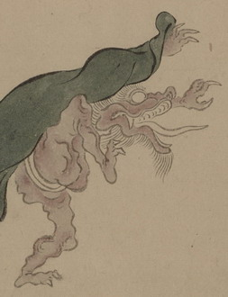

狼のように口が長くつき出た化物。顎ひげと眉毛を長く伸ばしており、灰色の布をかぶっている。肌の色は淡い茶色で白い褌を身につけている。白目を剥いて、右脚を高く上げている。
出典：親書誌：U426_nichibunken_0154：妖怪絵巻；ヨウカイエマキ／日付：2010／資源識別子：U426_nichibunken_0154_0076_0000
Copyright (c)2010- International Research Center for Japanese Studies, Kyoto, Japan. All rights reserved.